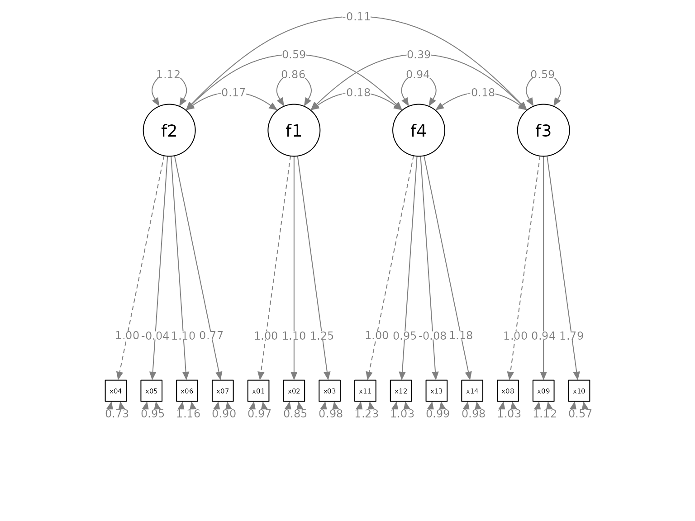

Quick Start To set_cfa_layout
Shu Fai Cheung & Mark Hok Chio Lai
2021-09-23
Source:vignettes/quick_start_cfa.Rmd
quick_start_cfa.RmdIntroduction
The semptools package contains functions that post-process an output from semPlot::semPaths(), to help users to customize the appearance of the graphs generated by semPlot::semPaths(). For the introduction to functions for doing very specific tasks, such as moving the parameter estimate of a path or rotating the residual of a variable, please refer to vignette("semptools"). The present guide focuses on how to use set_cfa_layout() to configure various aspects of an semPaths graph generated for a typical confirmatory factor analysis (CFA) model.
The Initial semPaths Graph
Let us consider a CFA model. We will use cfa_example, a sample CFA dataset from semptools with 14 variables for illustration.
library(semptools)
head(round(cfa_example, 3), 3)
#> x01 x02 x03 x04 x05 x06 x07 x08 x09 x10 x11
#> 1 1.159 1.271 1.451 -0.691 -0.015 -0.212 -0.336 1.559 0.870 1.115 -1.251
#> 2 0.059 -0.496 -0.585 -1.800 -0.555 0.012 1.208 0.551 0.055 -0.365 -0.142
#> 3 -0.737 2.933 1.625 0.642 -1.218 -0.155 -0.861 0.862 0.738 2.443 -0.628
#> x12 x13 x14
#> 1 0.253 0.663 -1.049
#> 2 0.110 -0.207 -0.226
#> 3 1.604 -1.688 0.395This is the CFA model to be fitted:
mod <-
'f1 =~ x01 + x02 + x03
f2 =~ x04 + x05 + x06 + x07
f3 =~ x08 + x09 + x10
f4 =~ x11 + x12 + x13 + x14
'Fitting the model by lavaan::cfa()
library(lavaan)
#> This is lavaan 0.6-9
#> lavaan is FREE software! Please report any bugs.
fit <- lavaan::cfa(mod, cfa_example)This is the plot from semPlot::semPaths():
library(semPlot)
p <- semPaths(fit, whatLabels="est",
sizeMan = 3.25,
node.width = 1,
edge.label.cex = .75,
style = "ram",
mar = c(10, 5, 10, 5))The default layout is sufficient to have a quick examination of the results. We will see how set_cfa_layout() can be used to do the following tasks to post-process the graph:
Change the order of the indicators.
Change the order of the factors.
Change the curvature of the inter-factor covariances.
Move the loadings along the paths from factors to indicators.
Rotate the graph.
Order the Indicators and Factors
Suppose we want to do this:
-
Order the factors this way, from the left to the right:
f2, f1, f4, f3
-
Order the indicators this way, from the left to the right:
x04, x05, x06, x07, x01, x02, x03, x11, x12, x13, x14, x08, x09, x10
-
We would like to place the factors this way:
f2above the center ofx04,x05,x06, andx07.f1above the center ofx01,x02, andx03.f4above the center ofx11,x12,x13, andx14.f3above the center ofx08,x09, andx10.
To do this, we create two vectors, one for the argument indicator_order and the other for the argument indicator_factor.
-
indicator_orderis a string vector with length equal to the number of indicators, with the desired order. In this example, it will be like this:
indicator_order <- c("x04", "x05", "x06", "x07",
"x01", "x02", "x03",
"x11", "x12", "x13", "x14",
"x08", "x09", "x10")-
indicator_factoris a string vector with length equal to the number of indicators. The elements are the names of the latent factors, denoting which indicators will be used to compute the mean positions to place the latent factors:
indicator_factor <- c( "f2", "f2", "f2", "f2",
"f1", "f1", "f1",
"f4", "f4", "f4", "f4",
"f3", "f3", "f3")The set_cfa_layout() function needs at least three arguments:
semPaths_plot: ThesemPathsplot.indicator_order: The vector for the order of indicators.indicator_factor: The vector for the placement of the latent factors.
They do not have to be named if they are in this order.
We now use set_cfa_layout() to post-process the graph:
p2 <- set_cfa_layout(p,
indicator_order,
indicator_factor)
plot(p2)Change the Curvatures of the Factor Covariances
The graph has the factors and indicators ordered as required. However, the inter-factor covariances are too close to the factors. To increases the curvatures of the covariances, we can use the argument fcov_curve. The default is .4. Let us increase it to 1.75.
p2 <- set_cfa_layout(p,
indicator_order,
indicator_factor,
fcov_curve = 1.75)
plot(p2)The covariances are now more readable. The exact effect of the values vary from graph to graph. Therefore, trial and error is required to find a value suitable for a graph.
Move the Loadings
We can also move all the factor loadings together using the argument loading_position. The default value is .5, at the middle of the paths. If we want to move the loadings closer to the indicators, we increase this number. If we want to move the loadings closer to the indicators, we decrease this number. In the following example, we move the loadings closer to the indicators, and increase the distance between them in the process.
p2 <- set_cfa_layout(p,
indicator_order,
indicator_factor,
fcov_curve = 1.75,
loading_position = .8)
plot(p2)
The factor loadings are now easier to read, and also closer to the corresponding indicators.
Rotate the Model
The default orientation is “pointing downwards”: latent factors on the top, pointing down to the indicators on the bottom. The orientation can be set to one of these four directions: down (default), left, up, and right. This is done by the argument point_to.
p2 <- set_cfa_layout(p,
indicator_order,
indicator_factor,
fcov_curve = 1.75,
loading_position = .8,
point_to = "up")
plot(p2)
Pipe
Like other functions in semptools, the set_cfa_layout() function can be chained with other functions using the pipe operator, %>%, from the package magrittr, or the native pipe operator |> available since R 4.1.x. Suppose we want to mark the significant test results for the free parameters using mark_sig():
# If R version >= 4.1.0
p2 <- set_cfa_layout(p,
indicator_order,
indicator_factor,
fcov_curve = 1.75,
loading_position = .9,
point_to = "up") |>
mark_sig(fit)
plot(p2)